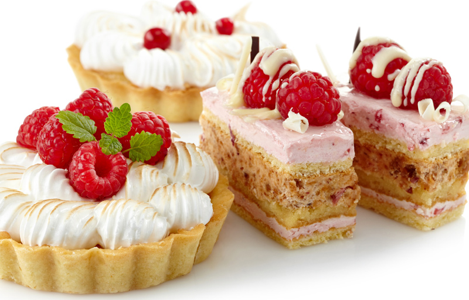
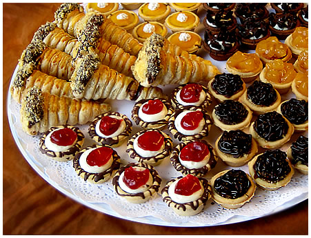

Bienvenidos al dulce mundo rosa de la Repostería Popdany... ¡Popdanytizate!
Popdany es una empresa de repostería que ofrece dulcería con un gusto tradicional e innovador,
con diseños adaptados a sus necesidades y variedad de productos.
Además, ofrece servicio a domicilio y catering para eventos.Popdany ofrece productos de calidad, mezclando lo clásico con lo vanguardista, conservando para el paladar el sabor que caracteriza a la marca,
comercializado a nivel nacional e internacional, con la mejor atención del mercado, creando un sentido de pertenecía entre el cliente y la empresa.
Repostería PopDany fue fundada en el año 1965 para la elaboración de productos de repostería típicos de la zona del Somontano (Huesca). Su fundador, Jesús Porta Conte, provenía de una familia dedicada desde antaño a la molinería de trigo y la panadería. Desde 1.965, como hizo su fundador, ahora sus sucesores siguen con los métodos tradicionales de elaboración.
TortaPoco a poco, siguiendo los métodos de elaboración tradicional, fue llegando a los hogares de la provincia de Huesca. Hoy en día, los sucesores de Jesús Porta Conte llegan a los mercados de toda de España.
En los procesos de fabricación se combina el trabajo artesanal ayudado por máquinas de última tecnología. Muchas de las materias primas que utilizamos en Repostería Porta para la elaboración de nuestros productos proceden del Somontano (famoso por sus excelentes vinos, almendras y miel), y todas ellas son sometidas a rigurosos procesos de selección, con el objeto de garantizar la máxima calidad de los elaborados.
Repostería Porta fue fundada en el año 1965 para la elaboración de productos de repostería para el sector de alimentación. Plum Cake, Cookies, Españoletas, Lenguas Choco Chips, Bizcochos Integrales y nuestro último producto BETWEEN.
En cumplimiento de lo dispuesto en la Ley Orgánica 15/1999 de 13 de Diciembre, de Protección de Datos de carácter personal, se le informa que los datos facilitados por Ud. podrán ser incorporados a un fichero de datos de cuyo tratamiento es responsable Repostería Porta, SL con domicilio en 22143 Abiego (Huesca), San Joaquín s/n. CIF: B22042766.
Los tratamientos de datos se realizarán exclusivamente para finalidades propias de la relación jurídica que le vincule con Ud. y ofrecerle información sobre actividades, así como de materias propias de la actividad desarrollada por Repostería Porta, SL.
Igualmente informamos que podrá ejercitar sus derechos de acceso, rectificación y cancelación, así como oponerse a su tratamiento, en los términos legalmente previstos, dirigiendo un escrito en dicho sentido al responsable del fichero, en la dirección arriba indicada.
